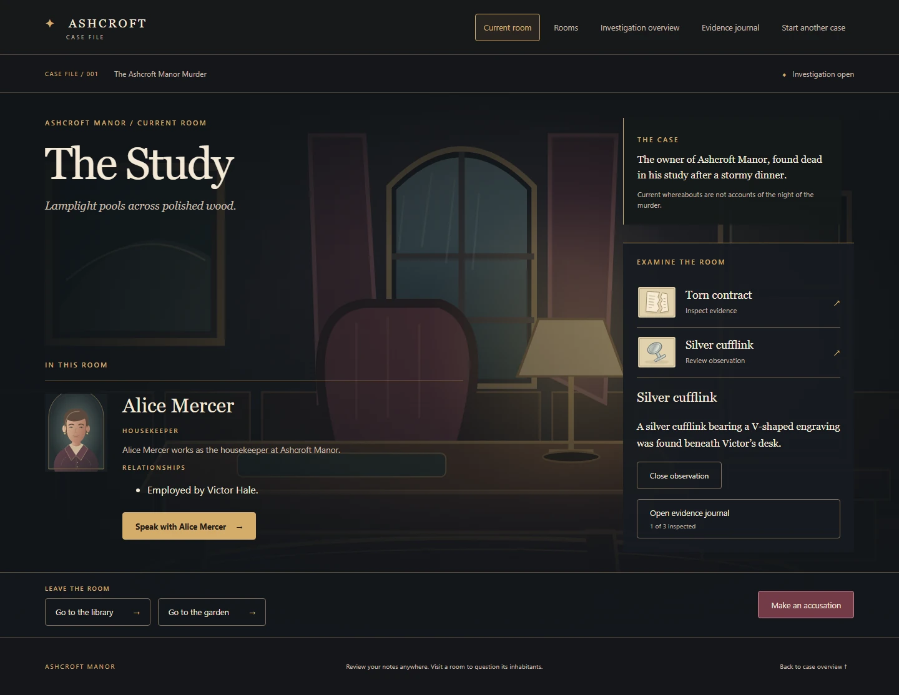
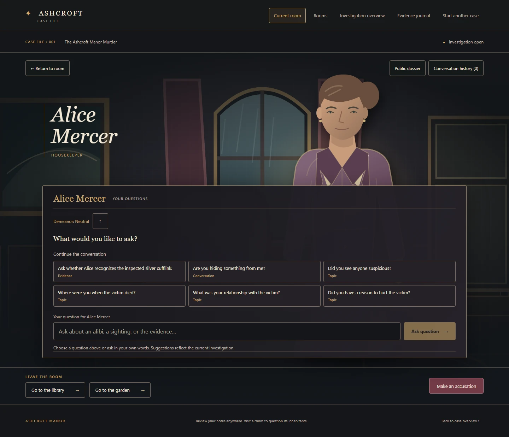

'%20stroke='%23aa8854'%20stroke-width='3'/%3e%3cpath%20d='M47%20568V182a193%20193%200%200%201%20386%200v386Z'%20fill='none'%20stroke='%23ab8f60'%20opacity='.35'/%3e%3cellipse%20cx='240'%20cy='553'%20rx='172'%20ry='155'%20fill='url(%23coat)'/%3e%3cpath%20d='m184%20393%2054%2083%2060-83-24-13h-67Z'%20fill='%23ccb899'/%3e%3cpath%20d='m184%20392-32%2032%2051%2090%2035-38m60-84%2032%2032-53%2090-39-38'%20fill='%2364444c'%20stroke='%23ad9877'%20stroke-width='3'/%3e%3cpath%20d='M208%20339v55q30%2024%2066-1v-62Z'%20fill='url(%23face)'/%3e%3cellipse%20cx='240'%20cy='245'%20rx='91'%20ry='121'%20fill='%235b493d'/%3e%3cellipse%20cx='149'%20cy='270'%20rx='15'%20ry='28'%20fill='%23dfb99a'/%3e%3cellipse%20cx='331'%20cy='270'%20rx='15'%20ry='28'%20fill='%23b08269'/%3e%3cpath%20d='M164%20192q78-58%20153%202l-4%20101q-12%2075-73%2086-60-12-72-88Z'%20fill='url(%23face)'/%3e%3cpath%20d='M153%20257q-35-137%2084-143%20118-2%2094%20146l-24-68q-89%2040-134%206Z'%20fill='%235b493d'/%3e%3cpath%20d='M173%20180q22-46%2093-44m-91%2038q-38%2082-11%20130'%20fill='none'%20stroke='%23a38a70'%20opacity='.6'%20stroke-width='7'/%3e%3ccircle%20cx='153'%20cy='307'%20r='7'%20fill='%23c4ae76'/%3e%3ccircle%20cx='325'%20cy='307'%20r='7'%20fill='%23c4ae76'/%3e%3cpath%20d='M183%20242q21-13%2039-2m38%200q20-12%2038%202'%20stroke='%235b493d'%20stroke-width='7'%20fill='none'%20stroke-linecap='round'/%3e%3cpath%20d='M185%20260q16-10%2031%200m48%200q15-10%2030%200'%20stroke='%23423e39'%20stroke-width='4'%20fill='none'/%3e%3cellipse%20cx='201'%20cy='260'%20rx='4'%20ry='5'%20fill='%23303c39'/%3e%3cellipse%20cx='279'%20cy='260'%20rx='4'%20ry='5'%20fill='%23303c39'/%3e%3cpath%20d='m240%20263-10%2034%2015%203'%20fill='none'%20stroke='%23a17360'%20stroke-width='3'%20stroke-linecap='round'/%3e%3cpath%20d='M217%20325q22%208%2044-1m-36%209h29'%20fill='none'%20stroke='%23865d55'%20stroke-width='3'%20stroke-linecap='round'/%3e%3cpath%20d='M178%20282q8%208%2020%205m84%200q12%201%2021-7'%20stroke='%23bc8b72'%20stroke-width='2'%20fill='none'/%3e%3cpath%20d='M123%20551q14-54%2041-63m151%209q33%2020%2039%2056'%20stroke='%23ad9571'%20opacity='.3'%20stroke-width='3'%20fill='none'/%3e%3cpath%20d='M240%20487v100'%20stroke='%23b39a70'%20stroke-width='2'%20opacity='.45'/%3e%3ccircle%20cx='250'%20cy='529'%20r='4'%20fill='%23b39a70'/%3e%3ccircle%20cx='250'%20cy='563'%20r='4'%20fill='%23b39a70'/%3e%3cpath%20d='M28%20579h424'%20stroke='%23aa8854'%20stroke-width='3'/%3e%3c/svg%3e)
Alice Mercer
Housekeeper
Alice works as the housekeeper at Ashcroft Manor and is employed by Victor Hale.
Question the suspects.
Examine the evidence.
Find out who is lying.
An illustrated detective game for people who enjoy following clues and comparing stories. Explore Ashcroft Manor, interview three suspects, and decide who to accuse.
Runs on your computer with Node.js and a local game server. No AI key is needed for offline play.

Visit the study, library and garden.
Examine a torn contract, a silver cufflink and muddy footprints. Keep the details in your evidence journal.
Choose a suggested question or type your own. Ask each suspect about what they know.
Read earlier statements alongside the evidence. Notice where accounts disagree.
Name the suspect you believe is responsible and see the result of your investigation.
Housekeeper
Alice works as the housekeeper at Ashcroft Manor and is employed by Victor Hale.
'%20stroke='%23aa8854'%20stroke-width='3'/%3e%3cpath%20d='M47%20568V182a193%20193%200%200%201%20386%200v386Z'%20fill='none'%20stroke='%23ab8f60'%20opacity='.35'/%3e%3cellipse%20cx='240'%20cy='553'%20rx='172'%20ry='155'%20fill='url(%23coat)'/%3e%3cpath%20d='m184%20393%2054%2083%2060-83-24-13h-67Z'%20fill='%23ccb899'/%3e%3cpath%20d='m184%20392-32%2032%2051%2090%2035-38m60-84%2032%2032-53%2090-39-38'%20fill='%234b5b4d'%20stroke='%23ad9877'%20stroke-width='3'/%3e%3cpath%20d='M208%20339v55q30%2024%2066-1v-62Z'%20fill='url(%23face)'/%3e%3cellipse%20cx='240'%20cy='245'%20rx='91'%20ry='121'%20fill='%2345463a'/%3e%3cellipse%20cx='149'%20cy='270'%20rx='15'%20ry='28'%20fill='%23cba887'/%3e%3cellipse%20cx='331'%20cy='270'%20rx='15'%20ry='28'%20fill='%23b08269'/%3e%3cpath%20d='M164%20192q78-58%20153%202l-4%20101q-12%2075-73%2086-60-12-72-88Z'%20fill='url(%23face)'/%3e%3cpath%20d='M150%20234q-10-129%2093-122%20103-9%2092%20135l-25-65q-65%2014-119-6Z'%20fill='%2345463a'/%3e%3cpath%20d='m174%20165%2045-25m14%2015%2056-15'%20stroke='%23897e67'%20opacity='.6'%20stroke-width='7'/%3e%3cpath%20d='M175%20307q16%2054%2064%2062%2051-13%2065-61l-22%2011-45%2024-38-24Z'%20fill='%2345463a'%20opacity='.65'/%3e%3cpath%20d='M183%20242q21-13%2039-2m38%200q20-12%2038%202'%20stroke='%2345463a'%20stroke-width='7'%20fill='none'%20stroke-linecap='round'/%3e%3cpath%20d='M185%20260q16-10%2031%200m48%200q15-10%2030%200'%20stroke='%23423e39'%20stroke-width='4'%20fill='none'/%3e%3cellipse%20cx='201'%20cy='260'%20rx='4'%20ry='5'%20fill='%23303c39'/%3e%3cellipse%20cx='279'%20cy='260'%20rx='4'%20ry='5'%20fill='%23303c39'/%3e%3cpath%20d='m240%20263-10%2034%2015%203'%20fill='none'%20stroke='%23a17360'%20stroke-width='3'%20stroke-linecap='round'/%3e%3cpath%20d='M217%20325q22%208%2044-1m-36%209h29'%20fill='none'%20stroke='%23865d55'%20stroke-width='3'%20stroke-linecap='round'/%3e%3cpath%20d='M178%20282q8%208%2020%205m84%200q12%201%2021-7'%20stroke='%23bc8b72'%20stroke-width='2'%20fill='none'/%3e%3cpath%20d='M123%20551q14-54%2041-63m151%209q33%2020%2039%2056'%20stroke='%23ad9571'%20opacity='.3'%20stroke-width='3'%20fill='none'/%3e%3cpath%20d='M240%20487v100'%20stroke='%23b39a70'%20stroke-width='2'%20opacity='.45'/%3e%3ccircle%20cx='250'%20cy='529'%20r='4'%20fill='%23b39a70'/%3e%3ccircle%20cx='250'%20cy='563'%20r='4'%20fill='%23b39a70'/%3e%3cpath%20d='M28%20579h424'%20stroke='%23aa8854'%20stroke-width='3'/%3e%3c/svg%3e)
Gardener
Ben works as Victor Hale's gardener.
'%20stroke='%23aa8854'%20stroke-width='3'/%3e%3cpath%20d='M47%20568V182a193%20193%200%200%201%20386%200v386Z'%20fill='none'%20stroke='%23ab8f60'%20opacity='.35'/%3e%3cellipse%20cx='240'%20cy='553'%20rx='172'%20ry='155'%20fill='url(%23coat)'/%3e%3cpath%20d='m184%20393%2054%2083%2060-83-24-13h-67Z'%20fill='%23ccb899'/%3e%3cpath%20d='m184%20392-32%2032%2051%2090%2035-38m60-84%2032%2032-53%2090-39-38'%20fill='%23464d62'%20stroke='%23ad9877'%20stroke-width='3'/%3e%3cpath%20d='M208%20339v55q30%2024%2066-1v-62Z'%20fill='url(%23face)'/%3e%3cellipse%20cx='240'%20cy='245'%20rx='91'%20ry='121'%20fill='%23493735'/%3e%3cellipse%20cx='149'%20cy='270'%20rx='15'%20ry='28'%20fill='%23e0b99c'/%3e%3cellipse%20cx='331'%20cy='270'%20rx='15'%20ry='28'%20fill='%23b08269'/%3e%3cpath%20d='M164%20192q78-58%20153%202l-4%20101q-12%2075-73%2086-60-12-72-88Z'%20fill='url(%23face)'/%3e%3cpath%20d='M150%20273q-33-137%2065-155%20126-17%20117%20135l-25-51q-32-12-50-49-30%2059-87%2063v66Z'%20fill='%23493735'/%3e%3cpath%20d='M327%20244q28%2062%201%20133l-41-30q21-34%2021-74m-151-33q-26%2070-2%20135l39-28q-21-35-22-74'%20fill='%23493735'/%3e%3cpath%20d='M181%20182q20-42%2057-45'%20stroke='%23b1947b'%20stroke-width='6'%20opacity='.5'/%3e%3cpath%20d='M183%20242q21-13%2039-2m38%200q20-12%2038%202'%20stroke='%23493735'%20stroke-width='7'%20fill='none'%20stroke-linecap='round'/%3e%3cpath%20d='M185%20260q16-10%2031%200m48%200q15-10%2030%200'%20stroke='%23423e39'%20stroke-width='4'%20fill='none'/%3e%3cellipse%20cx='201'%20cy='260'%20rx='4'%20ry='5'%20fill='%23303c39'/%3e%3cellipse%20cx='279'%20cy='260'%20rx='4'%20ry='5'%20fill='%23303c39'/%3e%3cpath%20d='m240%20263-10%2034%2015%203'%20fill='none'%20stroke='%23a17360'%20stroke-width='3'%20stroke-linecap='round'/%3e%3cpath%20d='M217%20325q22%208%2044-1m-36%209h29'%20fill='none'%20stroke='%23865d55'%20stroke-width='3'%20stroke-linecap='round'/%3e%3cpath%20d='M178%20282q8%208%2020%205m84%200q12%201%2021-7'%20stroke='%23bc8b72'%20stroke-width='2'%20fill='none'/%3e%3cpath%20d='M123%20551q14-54%2041-63m151%209q33%2020%2039%2056'%20stroke='%23ad9571'%20opacity='.3'%20stroke-width='3'%20fill='none'/%3e%3cpath%20d='M240%20487v100'%20stroke='%23b39a70'%20stroke-width='2'%20opacity='.45'/%3e%3ccircle%20cx='250'%20cy='529'%20r='4'%20fill='%23b39a70'/%3e%3ccircle%20cx='250'%20cy='563'%20r='4'%20fill='%23b39a70'/%3e%3cpath%20d='M28%20579h424'%20stroke='%23aa8854'%20stroke-width='3'/%3e%3c/svg%3e)
Business partner
Clara is Victor Hale's business partner and a frequent guest at Ashcroft Manor.
Move through the manor and inspect the objects you find. Read a clue closely, then return to your journal when you want to compare details.


Each suspect has their own information, way of responding, and memory of the conversation within your investigation. The evidence you've inspected and the statements you've heard can open relevant follow-up questions.
Questions use reviewed character responses. You can play entirely offline; optional AI chooses how a reviewed response is delivered. It cannot add new facts to the case.
Repair Dispute Preview
Meet Mara and Owen Vale, explore reception and the boathouse, and examine two repair-related records. Use what you find to question an account and ask for clarification.
This is a separate playable preview. It does not include the complete murder investigation, final accusation or ending.
Choose the Greyhaven preview from the game's case-selection screen after starting it locally.
These instructions use Windows PowerShell. Install Git for Windows and Node.js (choose version 24 LTS), then open PowerShell. This creates the game folder in your user folder:
cd $env:USERPROFILE
git clone https://github.com/esst-prog2/Detective-game-with-AI-agents.git
cd Detective-game-with-AI-agents
npm.cmd ci
npm.cmd --prefix web ciIn the same terminal, start offline mode:
Remove-Item Env:OPENAI_API_KEY, Env:OPENAI_MODEL -ErrorAction SilentlyContinue
npm.cmd run start:apiOpen a second PowerShell terminal and run these commands to enter the same game folder and start the interface:
cd (Join-Path $env:USERPROFILE 'Detective-game-with-AI-agents')
npm.cmd run dev:webOpen http://127.0.0.1:5173 and choose a case. Keep both terminals running. Press Ctrl+C in each to stop.
Ports 3001 and 5173 must be free. Reloading the page starts over; there is no save/continue feature. See the README for further setup details.
This website introduces the project. Playing requires the local server above.